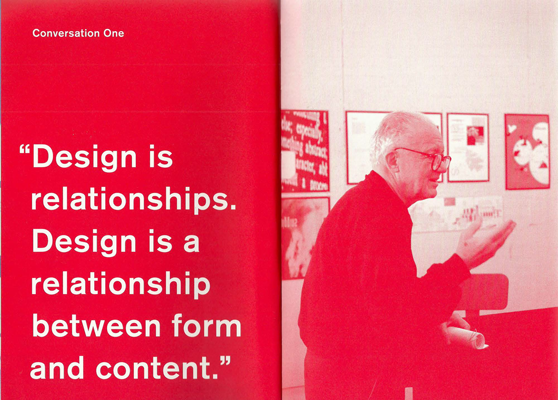
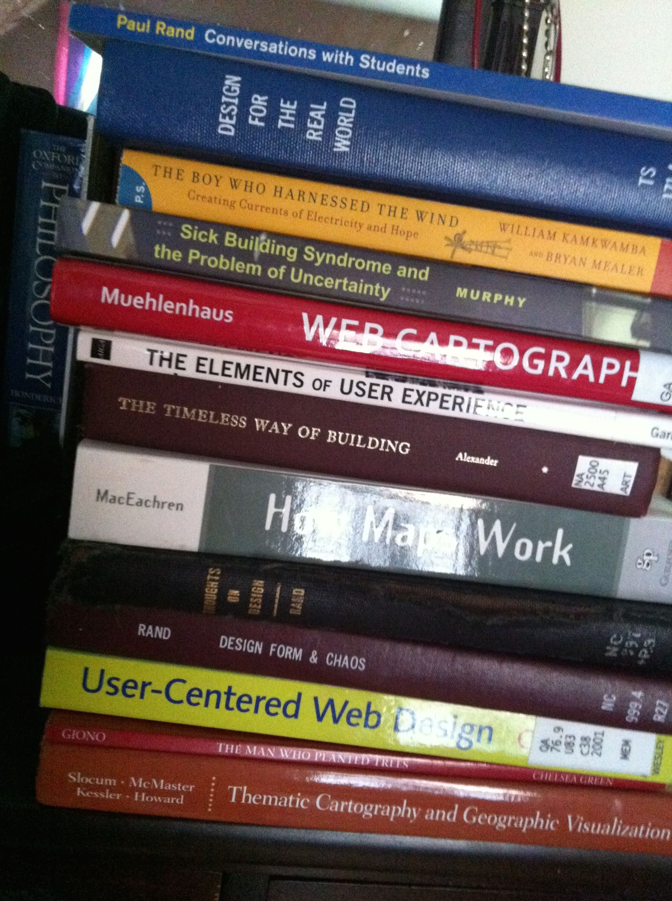
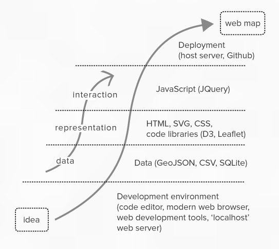
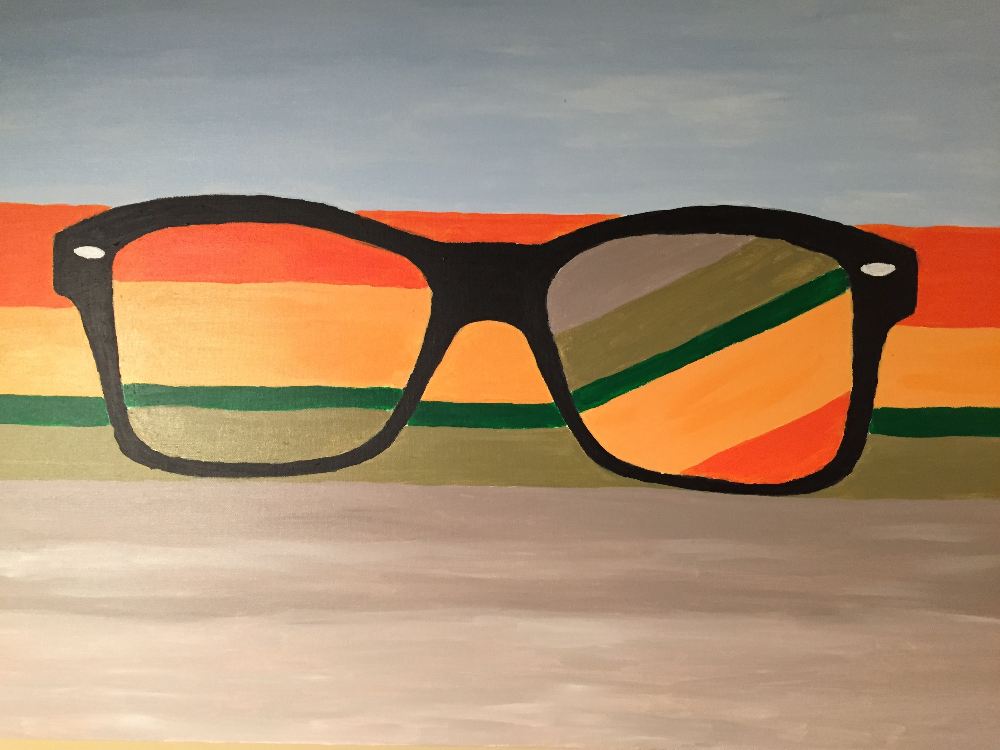
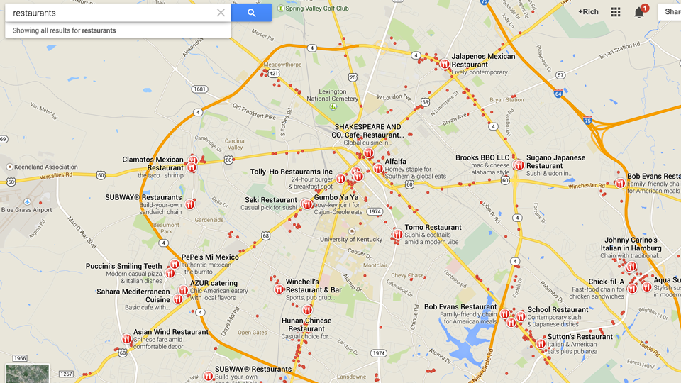
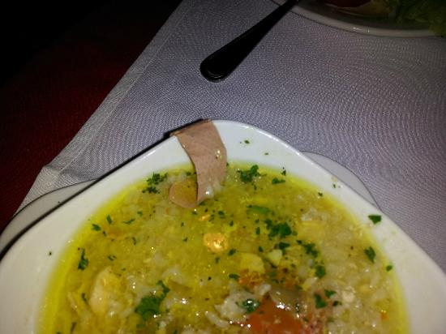
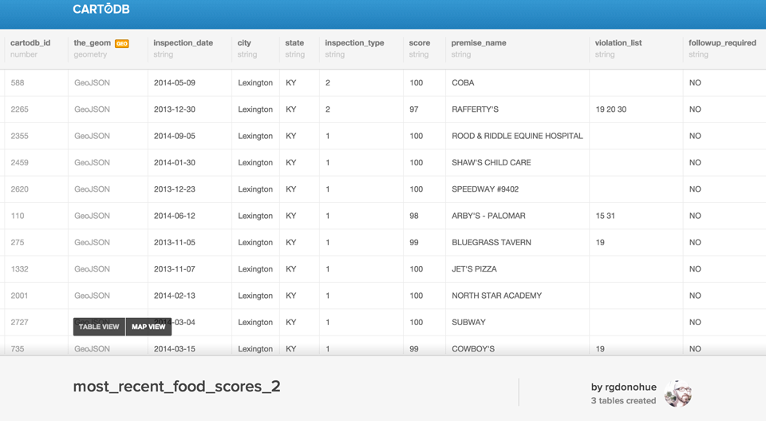
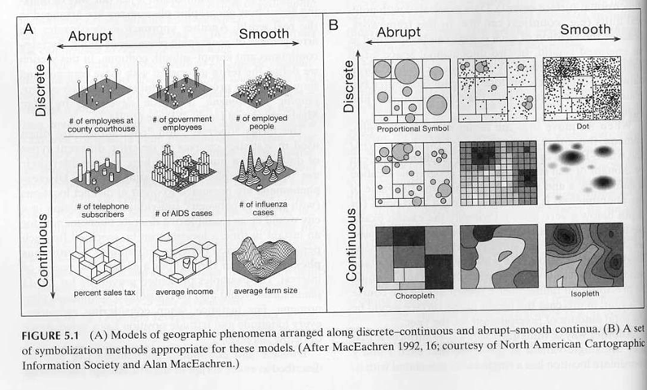
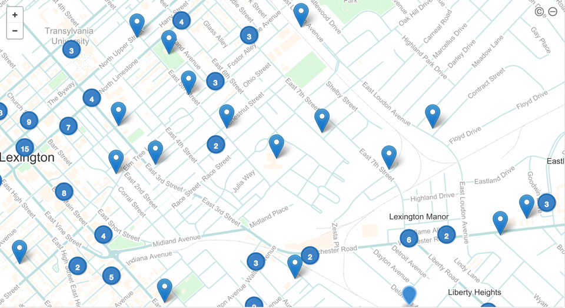
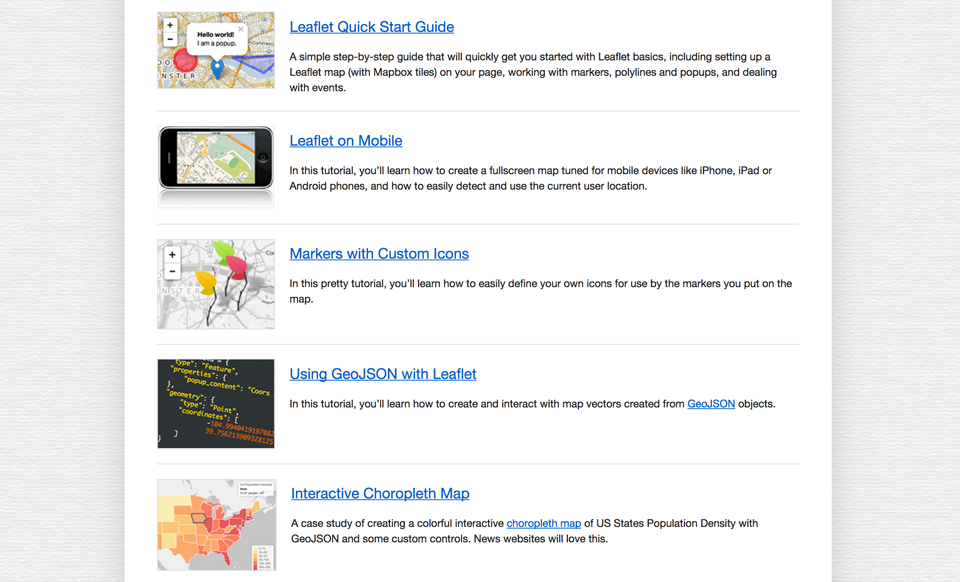

web mapping workflow
Rich Donohue — Department of Geography, University of Kentucky
@rgdonohue

source: Kroeger, Michael, and Paul Rand. Paul Rand: conversations with students. Princeton Architectural Press, 2008.
What is
cartographic design?
Answer: the [academic] art and
science of map making.

road map through
a web mapping workflow

Design starts with a problem.

Problems happen within geographies.
Which restaurants should I not eat in?

Which restaurants should I not eat in?
(Or, how do I avoid a bandaid in my soup?)

Geocode address data to lat/long coords!

Two important questions to ask when working with geographic data!
- What is the level of measurement?
- What is the nature of the geographic phenomena we want to map?
- What is the level of measurement?
- What is the nature of the geographic phenomena we want to map?
- nominal (information grouped into qualitative categories)
- ordinal (information grouped by rank based on quantitive measure)
- interval (information arranged along a standard scale)
- ratio (like interval, but with a non-arbitrary zero point)
- What is the level of measurement?
- What is the nature of the geographic phenomena we want to map?
- nominal (information grouped into qualitative categories)
- ordinal (information grouped by rank based on quantitive measure)
- interval (information arranged along a standard scale)
- ratio (like interval, but with a non-arbitrary zero point)
- score -> ordinal
- violations -> nominal
- opening date -> ?
- inspection date -> ?
- What is the level of measurement?
- What is the nature of the geographic phenomena we want to map?

source: MacEachren, 1992 (cited in Slocum, Terry A. Thematic cartography and visualization. Upper Saddle River, NJ: Prentice hall, 1999).
Q: How do we map this stuff already!?!?
Answer: Let's use a web mapping library or API (or something, right?)
road map through
a web mapping workflow
Q: How do we represent (see) these data?

Mapping libraries do the heavy lifting!

road map through
a web mapping workflow
Q: what tools do I use for interactivity?
- HTML (Hypertext Markup Language, the markup language that structures a web document)
- CSS (Cascading Style Sheets, the style rules that govern the layout and aesthetic appearance of
HTML elements within a web page)
- SVG (Scalable Vector Graphics, a text-based web standard vector graphic derived from XML that
describes vector shapes, as well as text and embedded raster graphics)
- JavaScript (a prototype-based server-side scripting language based on ECMAScript), and
- Web Application Programming Interfaces (APIs) including the Document Object Model
(DOM), which describes the relations between all entities within a rendered web page, as well as
the Canvas element, which supports drawing of bitmap raster images.
road map through
a web mapping workflow
thank you!
@rgdonohue